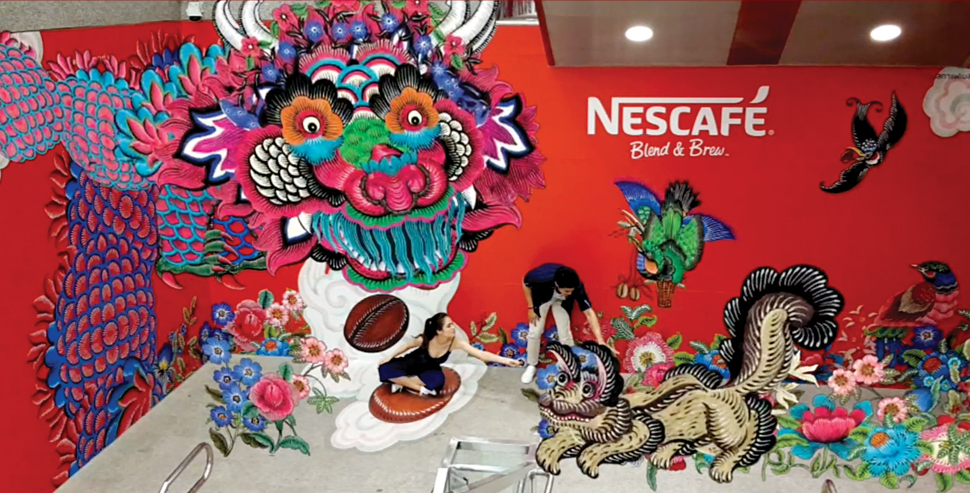
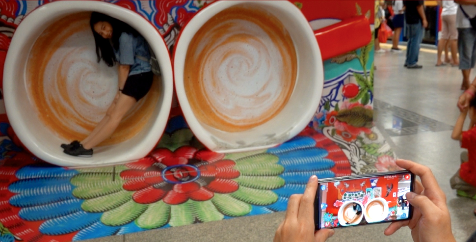
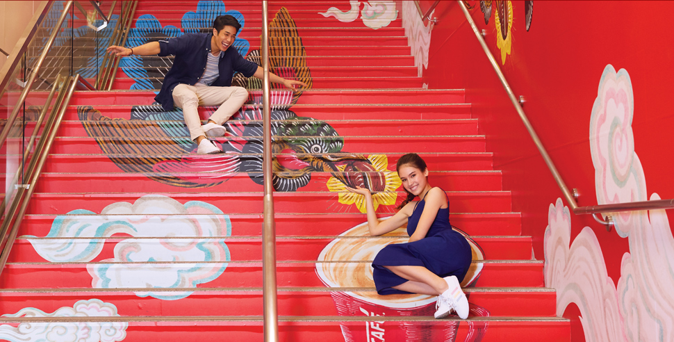
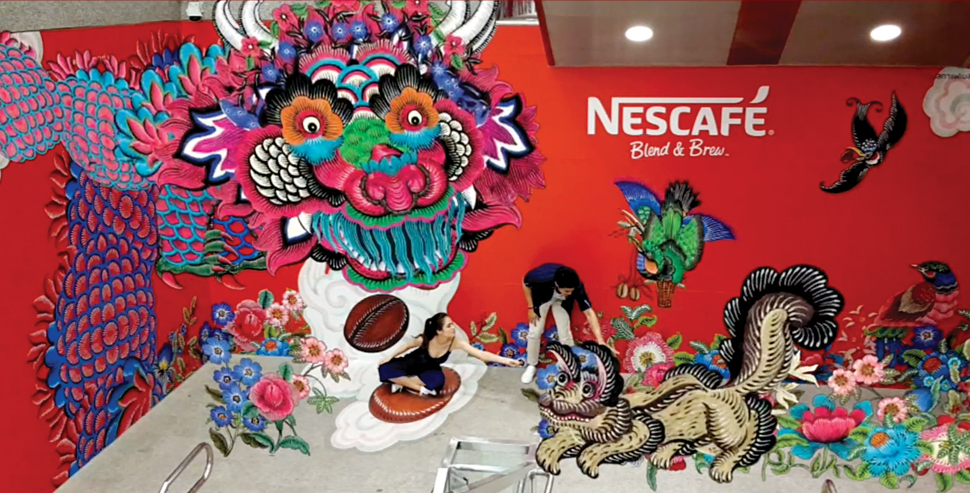
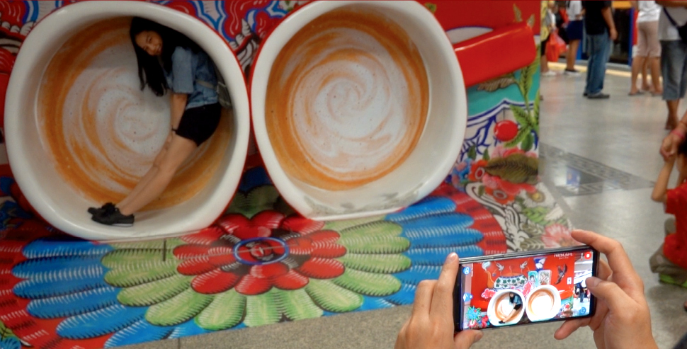
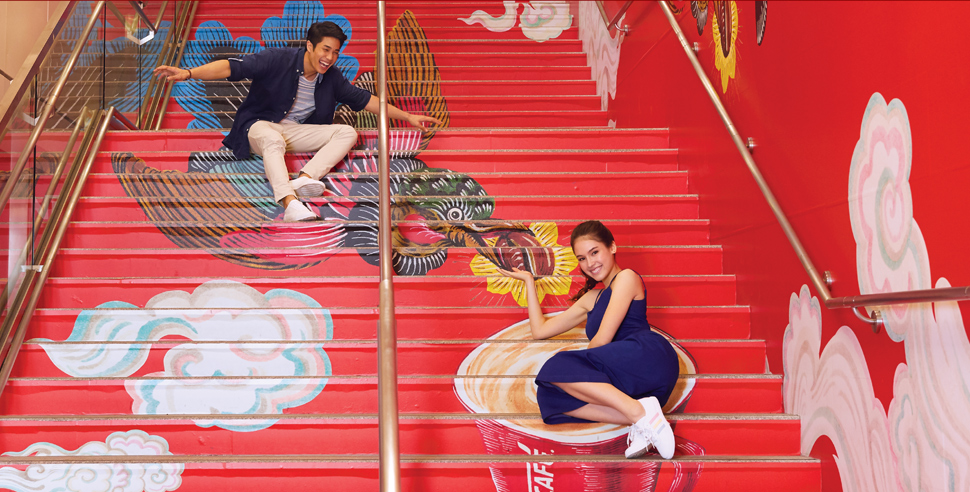

AR-enabled Chinese Dragon cave

selfie’ art installations

3D illusions

is like an old friend to most Bangkokians. It's familiar and reliable but not exciting. wanted to change this by reconnecting Bangkokians with the brand through their new coffee mix product range. Under their brand purpose of ‘Bond to be the best’ launched their new mixes range. This bonds the Robusta bean with Arabica to give a better aroma and taste.
Our strategy was simple, to bond Bangkokians together over a shared cultural experience because as a Bangkok community we are better when we bond together. But to succeed in making an old friend feel like a new friend, this cultural experience needed to be truly innovative.
A playground that bonds traditional Chinese illustration with cutting-edge technology and a modern interpretation to provide an experience for the Bangkok community like no-other. Situated at Wat Mangkon; a destination where Bangkokians would go naturally
We transformed an underground subway into a ‘go-to’ destination where Bangkokians bonded over their love of coffee. Through a mix of old (Chinese mysticism) and new (contemporary designs & technology) we reminded Bangkokians that nothing bonds us better than a cup of ; but we also demonstrated our ability to innovate. Making an old friend feel like a new friend.



½ million interactions with
the AR app in the first 2 weeks
1 million engagements on social media
in the same time-frame
Nearly 2 million social media
posts to-date
Earned PR value of nearly
45 million baht